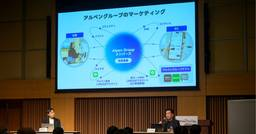

MarkeZine:新着一覧
https://markezine.jp/
翔泳社が運営するマーケター向け専門メディア。MarkeZineはデジタルを中心とした広告・マーケティングに関する情報を多角的な視点で毎日提供します。
フィード


「耳のシズル体験」を来店衝動へ。丸亀製麺・電通・Spotifyが実証したIMCの新たな一手
MarkeZine:新着一覧
丸亀製麺は2025年11月からの冬キャンペーンで、テレビCM、デジタル広告、Spotifyの音声広告を組み合わせた統合メディアプランニングを実施した。うどんをすする音や調理音といった「耳から届くシズル感」によって、認知の先にある来店を後押しする狙いだ。来店計測では、Spotifyの音声広告が他媒体と比べても上位の来店効果を示した。丸亀製麺、電通、スポティファイジャパンの3社に、施策の設計から成果、今後の音声活用までを聞いた。
2日前

賑やかな家電量販店がなぜ？ヤマダホールディングスが「クワイエットアワー」を継続・拡大する理由
MarkeZine:新着一覧
ヤマダデンキを展開するヤマダホールディングスが、音や光の刺激を抑える「クワイエットアワー」の実施店舗を2026年7月に拡大した。販売促進につながる賑やかさが常識の家電量販店でなぜ実施・継続できているのか？ ダイバーシティをテーマにマーケティング支援に取り組むAmplify Asiaの白石愛美氏が同社で推進を担う小井土凌氏に取材した。
2日前


【イベントレポート】AI時代に起きる「実行の分散」の罠──営業変革を形骸化させない仕組みづくりの要諦
MarkeZine:新着一覧
AIの登場により、戦略や施策のアイデアをいくらでも作れるようになった一方、多くの企業が「やりたいことばかり増えて現場のリソースが追いつかない」という新たな壁にぶつかっている。今回編集部が取材したのは、2026年9月に開催されたSALESCORE主催のカンファレンス「SALES TORCH 2026 ～営業は『実行』で決まる。営業組織の変革事例から読み解く Sales Execution～」の注目セッション。ラクスル・田部正樹氏、セレブリックス・今井晶也氏、SALESCORE・中内崇人氏の3名が語った、現場を動かし成果を出し切るための「Sales Execution」の要点をレポートする。
2日前


消費財マーケターは「リテールメディア幻滅期」とどう向き合うべきか──共通指標とT字型アプローチの実装
MarkeZine:新着一覧
近年、市場の急速な拡大に伴い注目を集めるリテールメディア。しかし消費財マーケティングの現場では「一通り試したが成果が見えにくい」「継続的な予算化に至らない」といった手応えのなさや違和感も広がっている。「MarkeZine Day 2026 Autumn」のセッションに登壇したカタリナマーケティングジャパンの三橋知佳氏は、リテールメディアの年間予算化が進む北米の先行事例を参考に、日本市場における「リテールメディア幻滅期」を突破する解決策を提示した。複数リテーラーのデータを横断した一気通貫の分析基盤と、マスメディアと連携させた「T字型アプローチ」により、リテールメディアを持続可能なマーケティング投資へと昇華させるプロセスを解説する。
3日前

LTV向上とリーチ拡大に貢献！アルペンが明かす、LINEを駆使した会員基盤強化×パーソナライズ配信
MarkeZine:新着一覧
全国に約400店舗を展開するアルペンは、ECと店舗を融合させたOMO戦略を推進し、持続的な成長を実現している。MarkeZine Day 2026 Autumnにて行われたセッションには、同社執行役員の原子朋則氏とLINEヤフーの奥亮介氏が登壇。LINEミニアプリとLINEタッチを活用して「仮会員」を撤廃し、LTV向上とパーソナライズ配信を実現したリアルな軌跡、さらにAIを見据えた今後の展望を語った。
3日前

「テレビCMの注視」を予測して見続けたくなる内容に。「日本生命セ・パ交流戦2026」広告制作の裏側
MarkeZine:新着一覧
テレビCMがきちんと見られるかどうかは、放映してみないとわからない。その前提を覆す取り組みが進んでいる。21年にわたりセ・パ交流戦に協賛する日本生命は、2026年、REVISIOの「AIコンテレビュー」を活用。注視の予測データを制作時の意思決定に組み込んだ。投下量を絞りながらも、過去最高の好感度を記録したという同CM。予測データは制作をどう変えたのか？ 日本生命の中村氏、REVISIOの小坂氏に取材した。
3日前

「VIVANT」が2ヵ月連続3部門首位、サッカーも好調【テレビ視聴率ランキング 2026年10月】
MarkeZine:新着一覧
今、どんなテレビ番組が注目されているのでしょうか？ 個人視聴率を基準とした月間ランキングをお伝えします。＜ビデオリサーチ調べ・関東地区・2026/09/28（月）～2026/11/01（日）
3日前

「おむつとビールの法則」は令和でも成り立つのか？WAON POINTの購買データでわかった新傾向
MarkeZine:新着一覧
長年にわたり購買データ分析に携わってきた、イオンマーケティングのお客さまインサイトチームが、WAON POINTの購買データを用いて「今のお買い物」の実態を解き明かす新連載。初回となる今回は、マーケティングの古典的通説として有名な「おむつとビールの法則」を令和の日本のデータで検証します。果たして、この有名な法則は現代の日本でも通用するのでしょうか？ データが示すリアルな購入者像と意外な併売傾向は、次なる販促のヒントとなるはずです。
3日前
テレビ×TVerで広告効果はどう変わる？リーチ補完・データ統合で証明された購買リフト
MarkeZine:新着一覧
テレビ局5社とTVerが初の合同カンファレンス「TV×TVer CONFERENCE 2026」を開催した。本記事では、イベントの模様と大場洋士社長への個別取材からTVerが目指す姿を紐解くとともに、テレビ局各社の取り組みや非特定視聴データが拓くテレビの未来に迫る。
3日前

ドンキ、トイザらス買収の目的は新しい「時間の入り口」 幼児・子ども～大人と続く生活LTVの拡張
MarkeZine:新着一覧
米国最新情報レポート「MAD MAN REPORT」を毎月発刊している榮枝洋文氏の視点を借り、国内外の企業の動きやグローバルの潮流を解説している本連載。今月は、35年前に日本の流通の扉を開いた米国ブランド「Toys “R” Us」を、ドンキが引き取った一件にフォーカス。国境をまたぐブランド権利の仕組みを紐解き、「看板」と「時間」の設計で押さえるべき要点を考えていく。
3日前
UGCは件数だけでなく「切り口の数」に注目せよ。生活者が語れるトピックの見つけ方
MarkeZine:新着一覧
SNSを運用し、キャンペーンも行っているのに、商品についての口コミが増えない。そんな悩みを抱える担当者に向け、SNS戦略の設計・運用を支援するホットリンクの増岡宏紀氏が、口コミ（UGC）を生み、広げる考え方を解説する本連載。第2回は、前回紹介した3つのルールのうち「生活者が語れるトピックを増やす」を掘り下げる。生活者の頭の中に、口コミのもとになる「言及在庫」を増やすには、どのようなトピックを見つけ、届ければよいのだろうか？
3日前